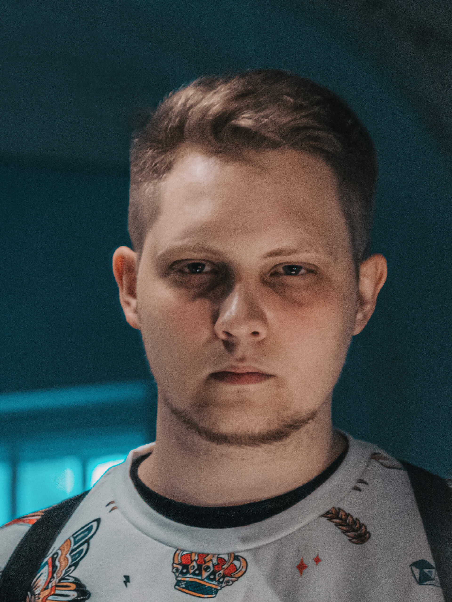

Магистратура
Направление: Управление мобильными киберфизическими системами.
Тема ВКР: "Комплексная среда моделирования, обучения и конвертации нейронных сетей для робототехнического комплекса".
Бакалавриат
Направление: Прикладная математика и информатика.
Тема ВКР: "Интерактивный генетический алгоритм на Java 8. Реализация и анализ".
Разработал среду визуального моделирования и обучения сверточных нейронных сетей NNWizard. В последствии обученная модель экспортируется для использования на аппаратном модуле Артинтрек.
Python Qt TensorFlow Keras OpenVINO OpenCV C++ Linux
Веду разработку среды визуального проектирования и обучения моделей машинного обучения и нейронных сетей MLWizard.
Python Qt TensorFlow Keras
Веду разработку IDE для визуального/текстового программирования микроконтроллерных плат Trackduino и Trackduino Pro.
Java Swing OpenBlocks C++ Python
Со-курировал разработку аппаратного модуля искусственного интеллекта Артинтрек и занимался разработкой его прошивки.
C++ Python OpenVINO OpenCV Linux Bash Arduino
Со-курировал разработку микроконтроллерной платы Trackduino Pro и занимался разработкой ее прошивки. Разработал драйверы исполнительных устройств и датчиков для этого микроконтроллера.
Python C++ Bash
C++ Arduino
Разработал программную часть модуля "Регистрация нагрузочных проб" для исследования работы сердца по заказу Военно-медицинской академии.
C++ Arduino
Провел багфикс и улучшил локализацию Robotrack IDE — среды визуального программирования роботов под управлением микроконтроллера Trackduino. Реализовал новые блоки для работы с векторными и матричными данными, MP3-модулем, компьютерным зрением, устройствами комплекса "Юный нейрофизиолог-инженер" и нейронными сетями.
Java C++ Swing OpenBlocks Arduino
Курирую студенческие производственные практики по направлению разработки ПО.
Представлял компанию на таких мероприятиях, как:
Разработал обучающие интерактивные приложения для нейролаборатории комплекса "Юный нейрофизиолог-инженер":
Java JavaFX C# WPF Kotlin TornadoFX
Модифицировал прошивку верхнего уровня системы компьютерного зрения для робототехнического комплекса.
C++
Разработал обучающий курс "Основы программирования на языке C++" для детей от 12 лет.
C++ Markdown HTML CSS
Провел багфикс и улучшил локализацию MRT IDE — среды визуального программирования роботов под управлением микроконтроллеров производства My Robot Time.
C# WinForms
Разработал приложение, позволяющее администратору частной клиники составлять график работы врачей. Итоговое расписание отрисовывалось в набор изображений, которые отправлялись на локальный сервер, откуда они брались телевизорами в холле для демонстрации клиентам.
C# WinForms
Обучал детей от 6 до 14 лет основам робототехники, конструирования, программирования микроконтроллеров и работы компьютерного зрения в сети клубов детского цифрового творчества "Роботрек".
Python Java C# C++ Kotlin Markdown HTML CSS Bash Qt JavaFX TornadoFX WinForms WPF TensorFlow Keras OpenCV OpenVINO OpenBlocks Bootstrap Git TravisCI Arduino Linux
Всегда готов к изучению новых.